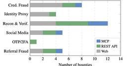

直近1週間の人気フィード
はてなブックマーク数を元に新着優先で並べ替え
OpenAI アルトマンCEO「PCに大量のRAMを搭載するのは問題」と発言。ローカルAIより「クラウドで24時間活用すべき」との考え語る 125 テクノエッジ TechnoEdge
125 テクノエッジ TechnoEdge
OpenAIのサム・アルトマンCEOは、米決済大手Stripeの共同創業者ジョン・コリソン氏のポッドキャスト番組に出演した際に「個人のPCに大量のDRAMを保有させることには問題がある」と指摘しました。この発言は、話題がローカルAIの普及によって、データセンターへの依存が低下するのではないかという話になったときに出てきたものです。
9時間前
Gemini Notebook、無料で数百冊の教科書にアクセス可能に 米国・インドの出版社提供 日本でも利用可
59ITmedia AI＋ 最新記事一覧
Googleは、米国とインドのプロバイダーが提供する数百冊の教科書に「Gemini Notebook」内で無料でアクセスできるようになったと発表した。
1日前

AIが人間に“闇バイト”を発注？ AIが物理的労働を買う求人サイト「RentAHuman」の実態 60ITmedia AI＋ 最新記事一覧
独立研究者のPulak MehtaさんとAryan Deshkumarさんが発表した論文「Security Risks of AI Agents Hiring Humans: An Empirical Marketplace Study」は、2026年2月に開設した、AIエージェントが人間を雇うことを目的に設計された人材雇用マーケットプレース「RentAHuman」の求人情報を分析し、悪用されていないかを調査した研究報告だ。
3日前


非機能はなぜ必要なのか 41 フューチャー技術ブログ
非機能要件はほとんどサービスレベル設計と同じもので、出発点は技術ではなく業務だと考えています。期待と約束の違い、数値にする順番、保証の対象について、社内の非機能要件ガイドラインを読んで感じた違和感から整理します。
2日前

ソフトウェアの脆弱性情報をいち早く入手する - CVE・CISA KEV・JPCERT/CC・OSV 255 npaka
世界中のソフトウェアの脆弱性情報が公開される仕組みと、いち早く入手する方法をまとめました。続きをみる
6日前

今、最も使われているプログラミング言語は？ AIコーディングでPython超えて急成長 27ITmedia AI＋ 最新記事一覧
Githubは年次レポート「GitHub Octoverse 2026」を公開。開発者が多いプログラミング言語のランキングが発表された。
2日前

俳優パトリック・スチュワートさん逝去『X-MEN』エグゼビア教授・『スター・トレック』ピカード艦長演じる 9
テクノエッジ TechnoEdge
10月28日、英国の俳優サー・パトリック・スチュワートが亡くなりました。86歳でした。
2日前
クラックゲート？iPhone Duo、発売当日からヒンジ部の画面割れ報告相次ぐ 78 テクノエッジ TechnoEdge
アップルの初の折りたたみ型スマートフォン「iPhone Duo」が2026年10月23日に発売されました。しかしその当日から、内側ディスプレイがヒンジ部分に沿って割れるという不具合が米国・オーストラリア・中国など複数の国のユーザーから報告されています。
6日前
着信から送金まで「スマホを操作して」体験、ニセ警察詐欺を再現した無料ゲーム「騙される30秒前」公開 17 テクノエッジ TechnoEdge
Classroom Adventure、日本貸金業協会、中央大学の有賀敦紀研究室は10月28日、警察官を名乗る「ニセ警察詐欺」を疑似体験できる無料のブラウザゲーム「騙される30秒前」を公開しました。
3日前
Claudeが有料プラン刷新、Max 20xは5時間制限なしの「Ultra」へ 「20xなのに週間10倍？」を改名で払拭 3 テクノエッジ TechnoEdge
AnthropicがClaudeの個人向けプランを刷新しました。
13時間前

AIチャットが勧める広告商品、選択率が約3倍に こっそり他商品けなし誘導 米研究者らが検証
6ITmedia AI＋ 最新記事一覧
米プリンストン大学に所属する研究者らが4月に発表した論文「Commercial Persuasion in AI-Mediated Conversations」は、オンラインショッピングなどにおける対話型AIによる説得が消費者の選択をどれほど操作できるかを検証した研究報告だ。
3日前
ブラウザでPDF/Office文書などを表示できるビューアを作りながらAI slopについて考えた 38 フューチャー技術ブログ
Office ファイルや PDF をブラウザで表示するためのドキュメント形式 BDF とビューアを、AI に作ってもらいながら仕上げました。その過程で考えた、AI slop の正体についても書きます。
5日前
Meta Ray-Banで向かいの席から撮影→指の動きからスマホのパスワードを解読する盗み見攻撃 3ITmedia AI＋ 最新記事一覧
イスラエルのテルアビブ大学に所属する研究者らが発表した論文「Watch and Crack: Password Inference from Smart-Glasses Video」は、スマートグラスで撮影された指の動きから、パスワードを解読する手法を実証した研究報告だ。
2日前

なぜ「半導体の供給はデータセンター優先」に見えるのか AIブームの実像、東京エレクトロン デバイス幹部が明かす 3ITmedia AI＋ 最新記事一覧
AIブームの中、半導体の供給不足が叫ばれている。「データセンターに優先的に供給されている」という見方もあるが、東京エレクトロン デバイス幹部はそれを否定する。AIブームの実像とは。
2日前

OpenAI、AIの行動指針「Model Spec」を改定 “記憶”の使い方や人間による監督を明記 3ITmedia AI＋ 最新記事一覧
OpenAIは、AIの振る舞い指針「Model Spec」の改定版を公開した。全体を5つの価値観に沿って再構成し、メモリや会話履歴の適切な扱い、エージェント自律動作時の人間による監督への服従などを規定。一方で人格設定や詳細な文体規定の大半を削除し、モデル呼称を「the assistant」から「GPT」に改めた。
2日前

ChatGPTのPro・Businessプランで「API利用」可能に 月最大500ドル分 3ITmedia AI＋ 最新記事一覧
米OpenAIは「ChatGPT」のProおよびBusinessプランに、同社のAPIを利用できる特典を追加すると発表した。月最大500ドル分（約7万9000円、1ドル158円換算）の利用枠を付与する。
2日前

Claude CodeやCodexなどの「セキュリティスキル」6898本を13領域のカオスマップに、安全性の評価も 12 テクノエッジ TechnoEdge
cccskillsがAIエージェント用セキュリティスキル6898件を13領域に整理しました。
4日前

【M3 Tech Blog 1000記事達成記念】エムスリーテックブログ1000記事を全部分析して分かった読まれる技術記事のヒミツ 3 エムスリーテックブログ
こんにちは、エムスリーエンジニアリンググループ 業務執行役員 VPoEの河合(@vaaaaanquish)です。エムスリーテックブログは投稿記事が1000を超えました🎉 2017年9月、最初の記事から約9年。 合計185人のエンジニア・QA・デザイナー・プロダクトマネージャーが書いてきた1000本の記事を、今回すべて集めて分析しました。業界の時代の変遷から、エムスリーらしい記事まで、まるっと振り返る、そんな1記事となります。 エムスリーテックブログについて どのような記事が話題になってきたのか 他の会社と比較してみると どうやって良い技術記事を生み出しているのか おわりに We are hir…
3日前
Android/Google TVの“広告やおすすめ枠”を消してApple TV風シンプルUIにするOSS無料ツール「CleanYourTV」（生成AIクローズアップ） 5 テクノエッジ TechnoEdge
今回は、Android TVやGoogle TVに表示される広告やおすすめ枠、最初から入っている不要なアプリなどを無効化し、Apple TVのようなシンプルなホーム画面に置き換えるオープンソースツール「CleanYourTV」を取り上げます。
5日前

3年分の反省をAIに読ませたら、同じ失敗をしているだけだった 3 フューチャー技術ブログ
3年分の「良かったこと・反省すること」メモをAIに分類させたら、同じ失敗を繰り返していただけでした。反省を読み返す役をAIに任せた仕組みと、卒業できる反省とできない反省の違いを考えます。
4日前
バルミューダがAI生成番組『Good Morning Radio』発表、6万円の置き時計The Clockに配信 アプリで無料体験も1000名限定で募集 3 テクノエッジ TechnoEdge
トースターやスマホで知られるバルミューダが、同社初のコンテンツサービスとなるパーソナルAIラジオ「BALMUDA Good Morning Radio」を発表しました。
4日前
AnthropicがIPO申請を正式提出、売上高162億ドルに急拡大 純損失は807億ドル 3 テクノエッジ TechnoEdge
AI企業のAnthropic, PBCは、米証券取引委員会（SEC）にクラスA普通株式の新規株式公開（IPO）に向けた登録届出書（Form S-1）を提出しました。
5日前
生成AIグラビアをグラビアカメラマンが作るとどうなる？第77回：Apache 2.0で何にでも使えて高性能なMOSS-Image登場！（西川和久） 4 テクノエッジ TechnoEdge
Apache License 2.0で何にでも使え、高い性能/クオリティを持ったMOSS-Imageが登場した。もちろんComfyUIやai-toolkitもday-0対応済み。今回はこれをメインにご紹介したい。
6日前